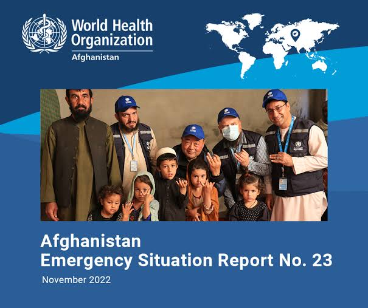

The WHO Afghanistan office works closely with the Ministry of Public Health to improve health systems, combat outbreaks, provide emergency health services, and support public health development throughout the region.
July 2025: WHO has launched a new mobile health team initiative to reach underserved rural communities in northern provinces.
The World Health Organization (WHO) in Afghanistan works to improve the health and well-being of all Afghans by preventing and reducing mortality, morbidity, and disability, and by strengthening health services. WHO's efforts include providing technical assistance, building capacity, and supporting the implementation of health activities on the ground. Currently, WHO is deeply concerned about potential funding shortages that could force the closure of many WHO-supported health facilities, leaving millions without access to critical medical care. Here's a more detailed look at WHO's work in Afghanistan: Key Areas of Focus: Health System Strengthening: WHO supports the development of national health policies and strategies, assists with health service delivery, and provides technical support for various health programs. Disease Prevention and Control: WHO plays a crucial role in combating diseases like polio, tuberculosis, and HIV/AIDS, as well as in early warning surveillance and response to potential outbreaks. Emergency Preparedness and Response: WHO provides support during emergencies like natural disasters and health crises, including delivering medical supplies and coordinating responses. Maternal and Child Health: WHO works to improve maternal and child health, including providing support for immunization programs, safe childbirth, and addressing malnutrition. Human Resources for Health: WHO supports training and capacity building for health professionals in Afghanistan. Challenges and Concerns: Funding Shortages: A major concern for WHO in Afghanistan is the potential for funding shortfalls to significantly impact the delivery of essential health services. Health Facility Closures: Funding cuts could lead to the closure of a large number of WHO-supported health facilities, leaving vulnerable populations without access to care. COVID-19 Response: WHO continues to support the COVID-19 response in Afghanistan, but funding constraints and other challenges can hinder these efforts. WHO's Response to the Crisis: Coordination: WHO works with other agencies and health actors to coordinate the overall health response in Afghanistan. Service Continuity: WHO is working to ensure the continuity of essential health services, including providing life-saving medical supplies. Emergency Response: WHO is responding to urgent trauma needs and potential outbreaks. Overall, WHO remains committed to supporting the health and well-being of the Afghan people, but is facing significant challenges due to funding shortages and other factors.

WHO continues to mobilize resources and scale up capacities to respond to outbreaks, health emergencies and natural disasters affecting Afghanistan in July 2022. In addition to the 5.9 magnitude earthquake on 22 June 2022 that affected more than 361,000 people, including 1036 casualties, there was a 5.1 aftershock that hit the south-eastern provinces of Khost and Paktika on 18 July. WHO and humanitarian partners continue to provide life-saving support, including primary health care services and trauma care, mental health and psychosocial support services, medical supply kit distribution (71 MT of supplies, including over 60 different modules of IEHK, TESK, NCDK, and cholera) and deployment of 10 female health care workers. WHO is also enhancing mass casualty management with a Basic Emergency Care (BEC) course for 48 healthcare professionals conducted in Gardez in July. WHO, with support from partners, distributed long-lasting insecticidal nets (LLINs) to earthquake- affected communities and deployed 10 teams of social mobilizers to enhance risk communication and community engagement (RCCE) focusing on prevention of acute watery diarrhea and other infectious diseases. Afghanistan continues to face multiple disease outbreaks. A significant surge of acute watery diarrhea (AWD) cases has been observed across the country. For measles, although the number of cases has decreased, all provinces continue to report cases. Crimean-Congo haemorrhagic fever (CCHF) cases, including six associated deaths, have been reported from 13 provinces while a surge of new dengue fever cases was reported in Nangarhar province in July 2022. A COVID-19 vaccination campaign was launched on 16 July 2022, targeting 4.8 million individuals. As of 30 July, more than 2.1 million doses have been administered. Furthermore, flash flooding increased in July, inflicting multiple causalities. Heavy rains also damaged thousands of houses and impacted infrastructure, such as roads and bridges, including areas impacted by the June 22 earthquake. WHO worked with MoPH to assess health facilities in flash flood-affected areas and provided emergency kits in Herat Province. The Health Cluster Coordination team is working on the Afghanistan Humanitarian Fund (AHF) on the second reserve allocation (RA) for 2022 with USD 4.7 million for the earthquake response. In addition, Health Cluster worked with stakeholders to develop the regional AWD response plans for the south, central, north, east, south-east and west regions and to enhance the coordination with WASH Cluster.
